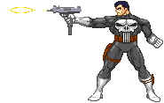

Mas essa fase foi logo abandonada
e Castle voltou à sua condição normal, em aventuras cada vez mais violentas onde passou a enfrentar
a máfia russa, entre outras. Atualmente, Castle faz também parte do grupo Thunderbolts, liderado pelo Hulk Vermelho.
